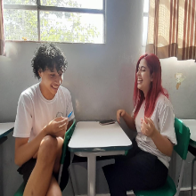

E ai B. :)
Como voce já deve imaginar eu tive a ideia desse site em uma madrugada conversando com você, para ser mais especifico foi no dia que eu pedi para você fazer o desenho e escolher uma cor kkkkkk :)
foi uma loucura planejar tudo, e sair pedindo palpite de todo mundo em segredo. masssss eu acho que deu certo.
Um dos motivos que eu criei o site foi para mostrar o quão importante você é para cada um dos seus amigos,
as vezes isso acaba passando batido então resolvi eternizar esses sentimentos :)
E agora é minha vez do textinho de aniversario kkkkkkk
B. você é uma pessoal realmente fora do comum, uma pessoa igual você? é só uma em 1 milhão, e eu agradeço demais pela nossa amizade e por todas as madrugadas em claro papeando.
por nunca ser um incomodo, por sempre ser a Adoravel B., Eu tenho tanta coisa que gostaria de agradeçer tambem, mas nem fazendo outro site daria kkkkk.
AH olha nossa conversa :) 15/07/2024 as 03:00
"Você é incrivel B. e nunquinha espere nada menos que incrivel para você"
 Parceiro das madrugadas
Parceiro das madrugadas
Kayky
FRIENDS by BTS
Como seu mindinho
Ainda somos os mesmos
Eu sei tudo sobre você
Temos que confiar um no outro
Não esqueça, mais do que o simples Obrigado
Você e eu realmente decidimos não brigar amanhã
Um dia, quando essa torcida acabar, fique (ayy), hey (ayy)
Você é minha alma gêmea
Por toda a eternidade, continue ficando aqui, fique (ayy), hey (ayy)
Você é minha alma gêmea🎵
 Tia legal
Tia legal
Leely
Oiii, menina dos olhos castanhos... tô brincando.
Oiii, Biazinha, tudo bem? Fui chamado pra falar mal de você, mas como não tem nada, vou falar da sua perfeição e agradecer.
Bia, muito obrigado por sempre estar na minha vida, independente da situação em que eu me encontrava, sempre me apoiando e cuidando de mim (sem você, eu já teria matado algum skskks). Eu amo ter a companhia de uma menina inteligente, LINDA e TOTALMENTE INCRÍVEL! Você é simplesmente perfeita.Bia, feliz aniversário! Esse é o terceiro aniversário que eu passo ao seu lado, e quero estar ao seu lado até o último. Que seu dia seja ótimo e incrível.
BIA, EU TE AMO E OBRIGADO POR TUDO!!

O melhor amigo
Arthur
A Bia é diferente do resto das pessoas, ela não é muito aberta logo de cara, mas quando você a conhece de verdade acaba se apaixonando pelo ser humano que essa menina é, e pela capacidade incrível que ela tem de alegrar e inspirar todos que estão à sua volta.
Por que mesmo sem tempo, sem vontade, sem cabeça, sem paciência, a Bia é o tipo raro de pessoa que sempre vai estar lá quando você precisar, e mesmo que não possa ajudar, ela ainda vai continuar do seu lado.
Isso é especial, isso é incomum, e é exatamente o que ela representa não só pra mim, mas acho que pra todos nós.
Ela não é perfeita, não é alta, não é monstrona (volta pra academia bia), mas ela sempre, SEMPRE é o melhor que ela pode ser, pra mim, pro grupo, pros pais, pros irmãos, e isso sim é perfeito, isso é o que falta nas pessoas hoje em dia, e é o que podemos encontrar na Bia.
Ela é aquele ouvido pra quem podemos contar nossos segredos, aquele ombro onde podemos chorar, aquele abraço pra onde podemos correr quando precisamos, e claro, aqueles conselhos para quais podemos recorrer em situações difíceis.
A Bia é mais do que uma amiga, é uma oportunidade rara que a vida nos dá de ter uma pessoa sincera e bondosa ao nosso lado todos os dias, é o tipo de oportunidade que devemos agarrar e cuidar, pra nunca perdermos.
Feliz aniversário Pequena (:
o maromba
Miguel
Oi bibi, tudo bão?
Eu não tenho falado tanto com você então... Vou dizer tudo q eu gosto em ti e do quanto nossa amizade é importante para mim, pra você nunca esquecer disso :3
Eu adoro seu jeito, amo quando você brinca comigo e com os meninos, quando você fica perto de mim sem eu pedir, ou quando você ri com o Arthur e o Renan, por mais q eu não esteja junto, eu adoro ouvir sua risada, eu amo ficar vendo você na escola, por mais bobo que seja, você andando, você conversando, fazendo tarefa, brincando, mas sempre q eu tenho oportunidade, eu dou uma olhada no que você está fazendo, amo quando você vem com o cabelo diferente, com ele preso, solto, algumas partes presas e outras não, eu adoro reparar nas suas roupas também, gosto de como elas ficam em você. Também amo muito quando você é sincera em dar uma opinião pra mim sobre minha vida, e eu queria muito compartilhar mais coisas dela com você. E também, as vezes quando chega o som de notificação, eu realmente fico um pouco esperançoso que seja mensagem sua, e quando é, vc não tem ideia do quanto feliz q eu fico, por mais que seja um, "Oii jp, tudo bem?", alegra qualquer momento do meu dia.
Tem muito mais coisas q eu gosto e queria dizer, mas acho q vai ficar muita coisa pro Kaykao escrever KKKK.. Mas, é, obrigado por estar na minha vida, sei que isso não é algo que se agradece, mas de verdade, eu conto cada dia que você vai na escola ou nos roles, cada minutinho q eu posso reparar em você ou ficar com você, pra mim já é motivo de agradecimento.
Te amo panguona, fica bem (e dorme mais cedo por favor :v)
loira
Jp
Beatriz Lopes Batista é mais do que uma amiga, ela é aquela presença luminosa de olhos castanhos que transforma qualquer momento em algo especial. Dona de uma personalidade cativante, ela equilibra leveza e profundidade de um jeito único, sempre sabendo o que dizer, seja para consolar ou para arrancar sorrisos. Sua generosidade não conhece limites, e a dedicação que coloca nas suas relações é um reflexo do seu caráter incrível e sincero. Beatriz é uma pessoa que inspira, que marca, e cuja amizade é um verdadeiro presente para quem tem a sorte de tê-la por perto.
Te amo abobrinha:)
Amigo de surto
Renan
Oi bia td bem?
Hj vou falar td q sinto por vc blz?
Ent, eu amo seu jeito, o jeito q seu cabelo fica preso ou solto, as suas roupas, todas ficam bonitas em vc, seu sorriso sempre me faz mais feliz, eu amo seus abraços, mesmo a gente não se abraçando o tempo todo, quando vc conversar comigo, eu sinto q só tem vc ali e mais ninguém, sua voz faz eu esquecer de todos os meus problemas, sua voz é bela, é como se fosse um anjo.
Vc é muito linda bia, td em vc é lindo, vc é bela bia. Vc é uma garota muito esperta, divertida e engraçada. Uma das melhores escolhas da minha vida foi conhecer vc bia, e sempre vai ser, pq vc é muito especial para mim, te amo bia.
Eu queria falar isso pessoalmente, mas eu não consigo pq tenho vergonha
Marquinhos
Marcos